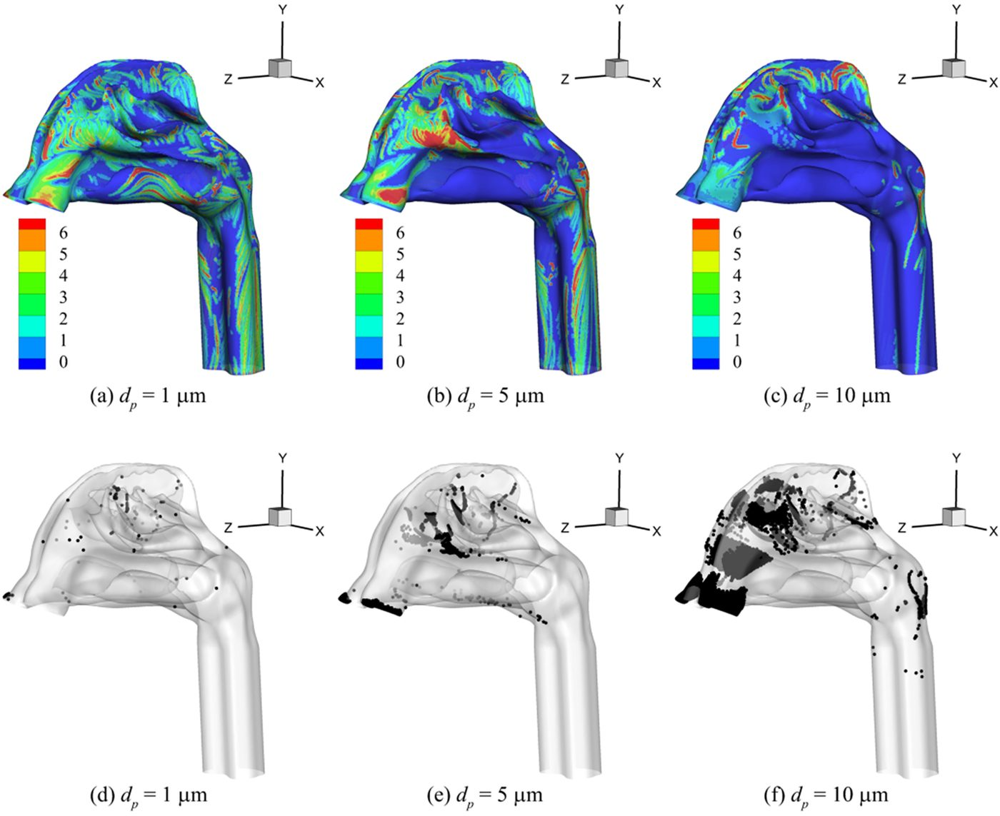
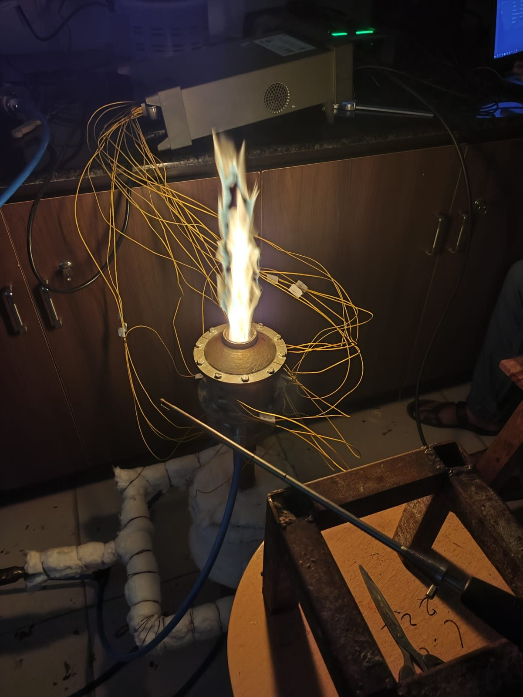
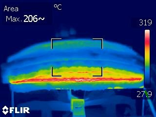
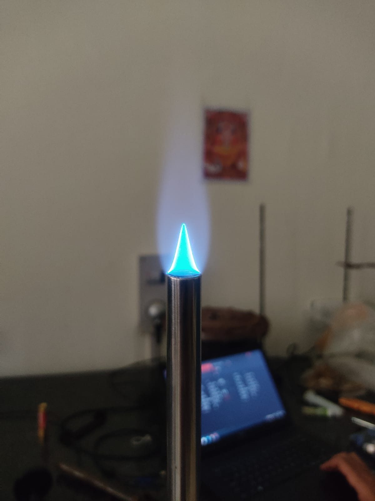
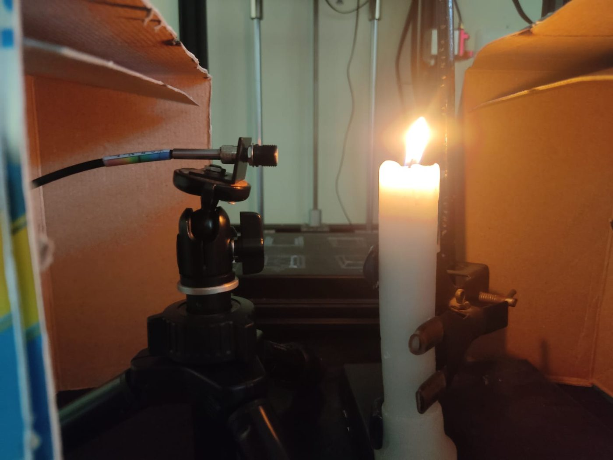
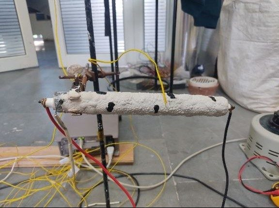

I study transport phenomena in complex, real-world geometries — from airflow, heat and aerosol transport in CT-reconstructed human airways to flow and combustion in engineering systems — combining patient-specific CFD simulation with hands-on experimental validation.
3D CFD simulations using CT-scan-reconstructed human airway geometries: airflow, heat and moisture exchange, and aerosol and nanoparticle transport under varying, unsteady respiratory conditions. Built on polyhedral meshing, species-transport modelling, Lagrangian–Eulerian particle tracking, and custom boundary conditions through user-defined functions, with systematic validation against published experimental data.
Transient simulation of fluid and particle transport under time-varying boundary conditions; high-velocity hydrogen mixing and combustion in CONVERGE CFD; custom Fluent UDF development for unsteady wall and dynamic-meshing conditions.
At IIT Bombay, CFD analysis and experimental testing of domestic pressure regulators for LPG systems and hydrogen–air premixed micro-combustors. Earlier, at CSIR-CMERI and IIT Jodhpur: SI-engine combustion simulation, bio-fuel combustion, and design and fabrication of a micro gas turbine test rig with full optical and emissions instrumentation.
Translating clinical imaging (CT/MRI) into high-resolution cardiovascular geometries; transient, pulsatile blood-flow physics under resting and stressed physiological conditions.
Workflows where high-fidelity CFD metrics — wall shear stress, pressure drops — are directly validated with optical and pressure–flow diagnostics on physical setups.
Custom code development (UDFs) and data-driven analysis that turn complex hydrodynamic data into clear, interpretable metrics supporting clinical decision-making.






| Computational | Experimental analogs |
|---|---|
| CFD solvers: ANSYS Fluent, CONVERGE, OpenFOAM, Basilisk | Flow loops: DAQ systems, ALICAT mass-flow meters, Testo 350 gas analyzer |
| Customisation: Fluent UDF coding (C), MATLAB analysis | Visualisation: High-speed Phantom cameras, CCD, StellarNet spectrometer |
| Post-processing: Tecplot, ANSYS post, OriginLab | Diagnostics: FLIR thermography, exhaust and emissions analysis |
I am always happy to discuss research, collaboration, or PhD opportunities in computational fluid dynamics and biofluid mechanics.